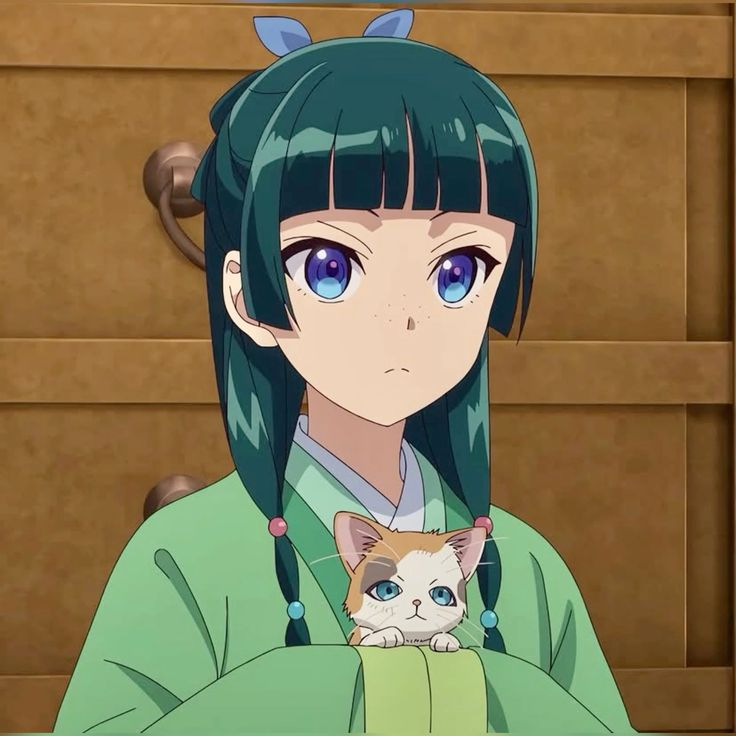

Maomao é a protagonista carismática e inteligente de Diário de uma Apotecária,
uma jovem criada no bairro da luz vermelha que se envolve nos mistérios do palácio imperial graças à sua
genialidade como farmacêutica. Apesar de sua aparência simples e comportamento indiferente, Maomao esconde uma
mente afiada, um espírito investigativo e uma personalidade cheia de nuances, que conquistam não só os
personagens à sua volta como também o público.
Historia
Origem humilde: Filha adotiva de um boticário, foi criada no distrito da luz vermelha, onde
aprendeu desde cedo sobre ervas, venenos e o corpo humano.
Entrada no palácio: Acaba sendo levada como serva para o harém imperial, mas sua genialidade logo
a faz se destacar.
Reconhecimento: Seus conhecimentos médicos e dedutivos a colocam em situações de destaque, até
chamar a atenção do enigmático e belo eunuco Jinshi.
Desenvolvimento: Ao longo da história, Maomao se envolve em mistérios médicos, intrigas
palacianas e dilemas éticos, mantendo seu senso de justiça (e sua língua afiada!).
habilidades
Farmácia e toxicologia: Mestre em identificar e manipular ervas, medicamentos e venenos.
Diagnóstico clínico: Tem um olhar clínico preciso, capaz de desvendar doenças ou envenenamentos
rapidamente.
Investigação lógica: Inteligente, observadora e extremamente racional, ela resolve mistérios com
base em dedução e ciência.
Resiliência: Apesar das dificuldades, Maomao é durona, resistente e determinada.
caracteristicas
Personalidade excêntrica: Curiosa, cínica e até um pouco sombria, adora estudar os efeitos de
venenos e doenças no corpo.
Aparência comum, mas marcante: Pequena, cabelo verde-acinzentado amarrado em tranças, geralmente
com expressão entediada ou irônica.
Relutância com o poder: Apesar de ser brilhante, evita chamar atenção e tenta ao máximo se manter
"invisível".
Afeto contido:Tem dificuldade em demonstrar sentimentos, especialmente em relação a Jinshi, com
quem tem uma relação cheia de tensão e sutilezas.
curiosidades
Maomao já testou venenos nela mesma por curiosidade científica (sim, ela é esse tipo de gênio).
Seu nome significa literalmente “erva daninha”, refletindo sua origem simples e resistência.
Ela tem um amor por gatos, que aparecem com frequência ao seu redor.
Apesar de ser cínica, demonstra empatia de forma prática — ajudando pessoas sem alarde.
Ela é inspirada em personagens femininas fortes, com um toque sherlockiano na maneira como resolve os
mistérios.